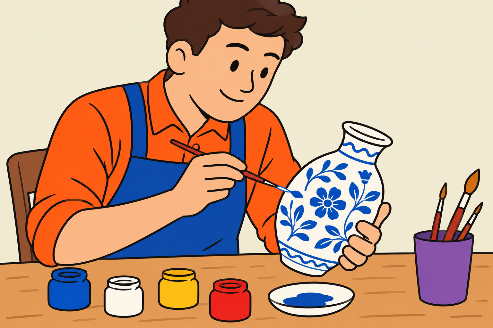

Hier kommen Sie zu dem Text von vorher und dem Text von danach.
Die Manufaktur für Porzellan
In der Stadt Meißen gibt es eine alte Manufaktur für Porzellan.
Aus Porzellan sind zum Beispiel:
- Teller
- Tassen
In der Manufaktur in Meißen stellen die
Arbeiter sehr wertvolles Porzellan her.
Deswegen ist die Manufaktur sehr bekannt.
Die Arbeiter stellen verschiedene Gegenstände
aus Porzellan her.

Manche Gegenstände benutzen die Menschen
im Alltag.
Zum Beispiel:
- Geschirr
- Vasen
- Figuren
Aber: Manche Gegenstände sehen auch komisch aus.
Die Gegenstände auf den nächsten Seiten sehen auch komisch aus.
Heute wissen viele Menschen nicht mehr:
Wofür hat man diese Gegenstände benutzt?
Sie können jetzt raten:
Was ist der Gegenstand auf der nächsten Seite?
Hier kommen Sie zu dem Text von vorher und dem Text von danach.